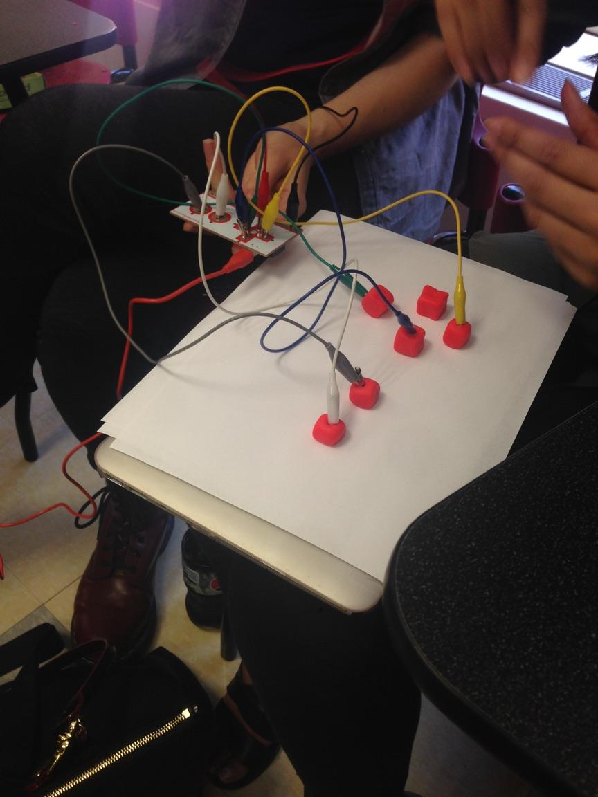

�
Assignment 3
For this assignment I decided to build off of my previous game. (jump to game)
I retained all the features of the previous game and added some new ones.
Here is a list of new features added:
- Pause Menu which shows directions for playing the game and allows you to select a difficulty level (with its own background)
- An Easy and a Hard level. The level changes the types of barriers and the speed of the player
- Background music which loops in the background
- Barriers in the game. (The easy level barriers are a little easier to avoid than the hard level barriers)
- Hitting a barrier triggers a "boing" noise
- Made use of methods to keep code more organized. The draw function just has a few simple method calls and all the logic is contained in those methods.
With these modifications in place the game was more interesting to play and felt more like my own. Here is the finished game:
This week we also had a chance to play with a MakeyMakey board and create a potential controller for our game. My group created arrow keys out of aluminium foil and used Play-doh to secure it down to a piece of paper.
The user would wear an aluminium bracelet and be able to push down on the "buttons". This created a directional pad which allows a character (such as the one in the above game) to be controlled simply by touching these aluminium keys.
Here are some pictures of the finished controller:
